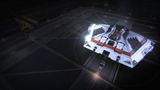

Макс. скорость / с форсажем
221 / 322 м/с
Два малых орудийных крепления, распределитель класса 1 и самый слабый щит в игре ставят Sidewinder на последнее место среди боевых кораблей. Зарабатывать награды за головы он может только там, где основную работу делает служба безопасности: в местах добычи ресурсов низкой интенсивности (Low RES) и у навигационных маяков в системах с высоким уровнем безопасности. Любой другой боевой корабль лучше. Учитесь на этом и пересаживайтесь, как только хватит денег.

Корабль получает оценку пригодности от 1 до 100 в полностью улучшенной сборке для этой роли, в сравнении со всеми другими кораблями той же роли. См. методику оценки кораблей.
Sidewinder Mk I — первый корабль каждого пилота. Если нечем оплатить выкуп, игра бесплатно выдаст его снова. В этом и есть его главная боевая особенность: можно рискнуть и потерять корабль без финансовых последствий. Чего нельзя, так это рассчитывать на равный бой. Два малых орудийных крепления, базовый щит на 52 МДж и 108 ед. брони ставят его на последнее место среди боевых кораблей.
Среди малых боевых кораблей он уступает моделям Eagle и Viper. Игроки единодушны: Sidewinder годится для старта, а пересесть с него стоит, как только хватит кредитов. Единственное место, где он действительно полезен, — место добычи низкой интенсивности (Low RES) в системе с высоким уровнем безопасности. Патрули атакуют и ослабляют цели, а вы получаете долю награды, если выживете.
Места добычи ресурсов низкой интенсивности и навигационные маяки в системах с высоким уровнем безопасности: везде, где опасную часть работы берут на себя патрули. Корабль не подходит для опасных мест добычи, зон конфликта или боёв с таргоидами: его уничтожат раньше, чем он успеет помочь.
Для боя у Sidewinder почти нет преимуществ. Он может сражаться благодаря обстоятельствам, а не характеристикам:
Модуль класса 1, распределитель энергии, не тянет непрерывный огонь. Щит слабее всех в игре, а урон двух малых орудий заметно ниже даже урона корабля Eagle. Ни одна сборка не сделает Sidewinder полноценным боевым кораблём. Задача сборки — помочь выжить достаточно долго, чтобы научиться драться. Как только сможете, пересядьте на Eagle Mk II, Viper или Cobra.
Стартовый корабль с бесплатным выкупом занимает последнее место: крепления 2×S, распределитель класса 1 и слабейший в игре щит ставят его ниже всех других малых кораблей. Выручает только манёвренность корпуса массой 25 т.
Оценка 40/100 складывается из боевых критериев, упорядоченных по важности. У каждого критерия свой вес (доля от 100); корабль получает часть баллов по сравнению со всеми соперниками. В сумме они дают итоговую оценку.
| Критерий | Баллы | Почему столько |
|---|---|---|
| Орудийные крепления | 7/30 | Всего 2×S: меньше орудийных креплений и меньшего размера среди боевых кораблей нет. У Eagle есть 3×S, а у каждого среднего корабля есть большие крепления. Два малых орудия дают меньше урона в секунду, чем даже самый дешёвый истребитель. |
| Распределитель энергии | 4/10 | Распределитель класса 1 — главное ограничение: он не успевает питать два орудия, так что даже с классом A приходится стрелять с перерывами. Это худший распределитель среди боевых кораблей. |
| Щит | 5/15 | Базовый щит на 52 МДж — самый слабый в игре. В сборке класса A двухконтурный генератор 2C даёт лишь ~70 МДж. Такой щит не выдерживает длительного ответного огня. |
| Броня и внутренние отсеки | 5/15 | Базовая броня 108 ед. при низкой твёрдости, масса корпуса 25 т и всего 2·2·1·1·1·1 дополнительных отсеков. Едва хватает на один генератор щита и усилитель корпуса. Эффективная прочность корпуса в сборке класса A достигает примерно 300. |
| Манёвренность | 14/20 | Его единственное боевое достоинство: корпус массой 25 т быстро разворачивается, а форсаж до 322 м/с помогает держаться на хвосте у цели, пока её добивает патруль. Манёвренность средняя, у Eagle и Viper она лучше. |
| Оснащение и универсальность | 5/10 | Два внешних крепления позволяют поставить усилитель щита и дипольные отражатели или теплоотводную катапульту. Корабль садится на малые площадки повсюду; разрешение, ранг и доступ к инженерам не нужны. Но шесть дополнительных отсеков и распределитель класса 1 почти не оставляют свободы в оснащении. |
| Взвешенный итог | 40/100 | Совпадает с итоговой оценкой пригодности корабля для этой роли. |
Вес каждого критерия отражает редакционную расстановку приоритетов роли, а не формулу игры. Длина полосы показывает, какую долю баллов по критерию заработал корабль. Длинные полосы дали основную часть оценки, короткие показывают, где он потерял баллы. См. методику оценки кораблей.
Во всех таблицах корабли оцениваются именно для боя и разделены по размеру посадочной площадки. Столбец Орудийные крепления показывает набор креплений, определяющий, какое оружие можно установить. Оценка пригодности по шкале 1–100 едина для всего сайта.
| Корабль | Класс | Орудийные крепления | Плюсы и минусы | Оценка |
|---|---|---|---|---|
| Kestrel Mk II | Малая | 3L 2S | Выше оценка; крепления; универсальностьБроня | 85 |
| Vulture | Малая | 2L | Выше оценка; манёвренность; щитБроня | 80 |
| Cobra Mk V | Малая | 3M 2S | Выше оценка; универсальность; крепленияРаспределитель энергии | 78 |
| Imperial Courier | Малая | 3M | Выше оценка; манёвренность; щитБроня | 70 |
| Viper Mk IV | Малая | 2M 2S | Выше оценка; броня; распределительМанёвренность | 66 |
| Diamondback Explorer | Малая | 1L 2M | Выше оценка; универсальность; манёвренностьБроня | 65 |
| Viper Mk III | Малая | 2M 2S | Выше оценка; манёвренность; крепленияБроня | 63 |
| Diamondback Scout | Малая | 2M 2S | Выше оценка; универсальность; броняЩит | 60 |
| Cobra Mk III | Малая | 2M 2S | Выше оценка; манёвренность; распределительЩит | 58 |
| Eagle Mk II | Малая | 3S | Выше оценка; манёвренность; крепленияЩит | 55 |
| Imperial Eagle | Малая | 1M 2S | Выше оценка; манёвренность; крепленияУниверсальность | 54 |
| Cobra Mk IV | Малая | 2M 3S | Выше оценка; крепления; броняМанёвренность | 44 |
| Sidewinder Mk I этот | Малая | 2S | — этот корабль (для сравнения) | 40 |
В списке 13 боевых кораблей для малых площадок. Лидер — Kestrel Mk II (85). Все они садятся там же, где Sidewinder, и напрямую с ним конкурируют.
| Корабль | Класс | Орудийные крепления | Плюсы и минусы | Оценка |
|---|---|---|---|---|
| Federal Corvette | Большая | 2H 1L 2M 2S | Выше оценка; крепления; распределительЩит | 98 |
| Imperial Cutter | Большая | 1H 2L 4M | Выше оценка; распределитель; щитМанёвренность | 91 |
| Anaconda | Большая | 1H 3L 2M 2S | Выше оценка; распределитель; щитМанёвренность | 88 |
| Imperial Clipper | Большая | 2L 2M | Выше оценка; манёвренность; распределительОрудийные крепления | 79 |
| Type-10 Defender | Большая | 4L 3M 2S | Выше оценка; крепления; броняМанёвренность | 78 |
Среди боевых кораблей для больших площадок (оценено 5) лидирует Federal Corvette (98). Им нужны площадки и бюджет побольше. По характеристикам они сильнее, но относятся к другому классу площадки.
| Корабль | Класс | Орудийные крепления | Плюсы и минусы | Оценка |
|---|---|---|---|---|
| Fer-de-Lance | Средняя | 1H 4M | Выше оценка; манёвренность; крепленияБроня | 93 |
| Krait Mk II | Средняя | 3L 2M | Выше оценка; крепления; броняРаспределитель энергии | 90 |
| Python Mk II | Средняя | 4L 2M | Выше оценка; крепления; распределительБроня | 90 |
| Mamba | Средняя | 1H 2L 2S | Выше оценка; распределитель; крепленияБроня | 89 |
| Alliance Chieftain | Средняя | 2L 1M 3S | Выше оценка; манёвренность; броняЩит | 88 |
| Alliance Challenger | Средняя | 1L 3M 3S | Выше оценка; броня; щитМанёвренность | 86 |
| Corsair | Средняя | 3L 3M | Выше оценка; распределитель; универсальностьМанёвренность | 85 |
| Federal Assault Ship | Средняя | 2L 2M | Выше оценка; распределитель; манёвренностьЩит | 84 |
| Python | Средняя | 3L 2M | Выше оценка; распределитель; универсальностьМанёвренность | 83 |
| Federal Gunship | Средняя | 1L 4M 2S | Выше оценка; распределитель; броняМанёвренность | 82 |
| Alliance Crusader | Средняя | 1L 2M 3S | Выше оценка; распределитель; броняМанёвренность | 80 |
| Federal Dropship | Средняя | 1L 4M | Выше оценка; броня; крепленияМанёвренность | 76 |
| Krait Phantom | Средняя | 2L 2M | Выше оценка; универсальность; манёвренностьБроня | 74 |
Среди боевых кораблей для средних площадок (оценено 13) лидирует Fer-de-Lance (93). Здесь дешевле корпуса и меньше площадки. По характеристикам они уступают этому кораблю, но относятся к другому посадочному классу.
Sidewinder бесплатный в двух смыслах: на нём вы начинаете игру, и его же получаете, когда не хватает денег на выкуп другого корабля. Покупка почти ничего не стоит (~32 тыс. кр. с оснащением). Он есть на каждой верфи, для покупки не нужны разрешение, ранг или доступ к инженерам. Корабль из базовой игры, дополнение Odyssey не требуется.
Цена корпуса настолько мала, что не в ней его ценность. Главное — бесплатный выкуп: новичок учится сражаться без риска разориться.
Не тратьтесь на инженерные улучшения Sidewinder для боя: пользы почти не будет. Поставьте два дешёвых многоствольных орудия на подвижном подвесе и один усилитель щита. Полетайте в местах добычи низкой интенсивности, пока не накопите на Eagle или Viper. Потом оставьте Sidewinder в ангаре как бесплатный запасной корабль.
Ниже все этапы оснащения. У Sidewinder их почти нет: начальная сборка годится для первых боёв, класс A — предел разумных затрат, а улучшения показаны только для полноты (не собирайте материалы ради этого корабля). В сборке класса A вместо штатного импульсного лазера ставят второе многоствольное орудие, а силовые модули меняют на класс A. В инженерной сборке применён обычный набор недорогих улучшений для малого боевого корабля.
| Отсек | Начальная · только покупка | Класс A · без улучшений | С инженерными улучшениями | Примечания |
|---|---|---|---|---|
| Орудийные крепления | ||||
| Малое 1 | 1G Многоствольное орудие (на подвижном подвесе) | 1G Многоствольное орудие (на подвижном подвесе) | G5 Перегрузка + Автозарядка | Основное орудие на подвижном подвесе: многоствольное орудие. «Перегрузка» повышает скромный урон в секунду, «Автозарядка» позволяет вести огонь без пауз. |
| Малое 2 | 1G Импульсный лазер (на подвижном подвесе) | 1G Многоствольное орудие (на подвижном подвесе) | G5 Перегрузка + Коррозионные снаряды | Второе многоствольное орудие заменяет штатный импульсный лазер. «Перегрузка» повышает урон, «Коррозионные снаряды» снижают сопротивление брони для всего оружия. |
| Внешние крепления | ||||
| Крепление 1 | 0E Усилитель щита | 0A Усилитель щита | G5 Усиленная конструкция + Суперконденсаторы | Усилитель щита. «Усиленная конструкция» даёт самый дешёвый существенный прирост, а «Суперконденсаторы» увеличивают запас прочности щита в МДж. |
| Крепление 2 | 0I Теплоотводная катапульта | 0I Пусковая установка дипольных отражателей | G1 Увеличенный боезапас (без экспериментального эффекта) | Необязательно, низкий приоритет. Увеличенный боезапас даёт больше дипольных отражателей. Дипольные отражатели мешают огню орудий на подвижном подвесе и турелей. |
| Основные модули | ||||
| Обшивка | Лёгкий сплав | Военный композит | G5 Усиленная конструкция + Усиленная обшивка | |
| Силовая установка | 2E Силовая установка | 2A Силовая установка | G5 Перегрузка + Распределение тепла | Класс A даёт запас мощности для двух орудий и щита. «Перегрузка» повышает мощность, а «Распределение тепла» уменьшает нагрев. |
| Маневровые двигатели | 2E Маневровые двигатели | 2A Маневровые двигатели | G5 Грязная настройка двигателей + Форсированные двигатели | Класс A и «Грязная настройка двигателей» обеспечивают манёвренность, от которой зависит выживание хрупкого корпуса. «Форсированные двигатели» помогают при разгоне на форсаже. |
| Рамочно-сместительный двигатель (FSD) | 2D Рамочно-сместительный двигатель (FSD) | 2A Рамочно-сместительный двигатель (FSD) | G5 «Увеличенная дальность» + Управление массой | Класс A нужен, чтобы добраться до места добычи: Увеличенная дальность в паре с «Управлением массой». В самом бою дальность прыжка не нужна. |
| Система жизнеобеспечения | 1D Система жизнеобеспечения | 1D Система жизнеобеспечения | G5 «Снижение массы» (без экспериментального эффекта) | Поставьте класс D ради меньшей массы; Снижение массы ещё больше уменьшает массу, а система жизнеобеспечения не имеет экспериментального эффекта. |
| Распределитель энергии | 1D Распределитель энергии | 1A Распределитель энергии | G5 Ускоренная зарядка + Сверхпроводящие каналы | Поставьте класс A в первую очередь: это самое полезное изменение. «Ускоренная зарядка» и «Сверхпроводящие каналы» позволят двум орудиям дольше стрелять до разрядки оружейного конденсатора WEP. |
| Сенсоры | 1D Сенсоры | 1D Сенсоры | G5 Снижение массы (без экспериментального эффекта) | Класс D и «Снижение массы» облегчают и без того лёгкий корабль: для боя большая дальность сенсоров не нужна. |
| Топливный бак | 1C Топливный бак | 1C Топливный бак | (нет чертежа улучшения) | Штатный бак имеет фиксированный объём, недоступный для инженерных улучшений. |
| Дополнительные отсеки | ||||
| Класс 2 | 2D Генератор щита | 2C Генератор двухконтурного щита | G5 Усиленный + Повышенная ёмкость | Двухконтурный щит быстро восстанавливается между заходами на цель. «Усиленный» и «Повышенная ёмкость» доводят запас прочности щита в МДж до максимума. |
| Класс 2 | 2D Усилитель корпуса | 2D Усилитель корпуса | G5 Усиленная конструкция + Усиленная обшивка | Усилитель корпуса. «Усиленная конструкция» и «Усиленная обшивка» дают самый дешёвый существенный прирост эффективной брони. |
| Класс 1 | — | 1D Усилитель корпуса | G5 Усиленная конструкция + Усиленная обшивка | Второй усилитель корпуса займёт соседний отсек и немного повысит живучесть. |
| Класс 1 | — | 1D Усилитель модулей | (нет чертежа улучшения) | Усилитель модулей распределяет урон от пробившего корпус попадания между основными модулями. Не улучшается у инженеров. |
| Класс 1 | — | 1D Усилитель корпуса | G5 Усиленная конструкция + Усиленная обшивка | |
| Класс 1 | — | 1D Усилитель корпуса | G5 Усиленная конструкция + Усиленная обшивка | |
| Планировщики и экспорт | ||||
| Открыть в Coriolis | открыть | открыть | открыть | Открывает coriolis.io одним нажатием. |
| Открыть в EDSY | открыть | открыть | открыть | Открывает edsy.org одним нажатием. |
| Скопировать SLEF | Копирует исходный экспорт оснащения корабля (SLEF) для выбранного варианта. | |||
Это предел возможностей боевого Sidewinder, и даже так он слабее штатного Eagle. Собирайте начальный вариант, а не инженерный. Сохраните материалы для корабля, который стоит улучшать.
Цель — за небольшие деньги подготовить Sidewinder к бою. Купите 1G на подвижном подвесе: многоствольное орудие для первого малого крепления. Во втором оставьте штатный 1G на подвижном подвесе: импульсный лазер. Подвижный подвес помогает, пока вы учитесь целиться, а многоствольное орудие бережно расходует заряд маленького распределителя. Добавьте модуль 0E усилитель щита в одно внешнее крепление и теплоотводную катапульту в другое.
Оставьте штатный материал обшивки Лёгкий сплав: в сборке без улучшений военный композит не стоит своих денег. В самый крупный дополнительный отсек поставьте модуль 2D генератор щита и 2D усилитель корпуса в другой отсек класса 2. Четыре отсека класса 1 оставьте пустыми. Общие расходы намного меньше 100,000 кр.. Это весь план: на таком маленьком корабле больше нечего существенно улучшить простой покупкой модулей.
Модулей, которые стоит менять на класс A, немного. Если всё-таки хотите выжать максимум из корпуса перед сменой корабля, действуйте в таком порядке:
Примерно 150–250 тыс. кр. за всё. К этому моменту в модули вложено больше, чем стоит такой корабль. Лучше купите Eagle Mk II.
Инженерный вариант Sidewinder приведён только для полноты. Если всё же решите собрать его, используйте обычные чертежи для малых боевых кораблей. Уникальных улучшений здесь нет:
| Модуль | Чертёж | Экспериментальный эффект | Инженер |
|---|---|---|---|
| Распределитель энергии (1) | Ускоренная зарядка (G5) | Сверхпроводящие каналы | The Dweller |
| Многоствольные орудия | Перегрузка (G5) | Коррозионные снаряды (одно) / Автозарядка (другое) | Tod McQuinn |
| Генератор щита (2) | Усиленный (G5) | Повышенная ёмкость | Lei Cheung |
| Усилитель щита | Усиленная конструкция (G5) | Суперконденсаторы | Didi Vatermann |
| Силовая установка (2) | Перегрузка (G5) | Распределение тепла | Hera Tani |
| Маневровые двигатели (2) | Грязная настройка двигателей (G5) | Форсированные двигатели | Professor Palin / Mel Brandon |
| Обшивка | Усиленная конструкция (G5) | Усиленная обшивка | Selene Jean |
| Усилитель корпуса | Усиленная конструкция (G5) | Усиленная обшивка | Selene Jean |
| Рамочно-сместительный двигатель (FSD) (2) | Увеличенная дальность (G5) | Управление массой | Felicity Farseer |
Мало: улучшения низкого уровня, модули малых классов. Но и отдача мала: даже улучшенный Sidewinder уступает кораблю класса A — Eagle. Лучше потратить материалы на корабль, который останется у вас надолго.
Примерный рост характеристик для трёх вариантов (ориентировочные значения, не точные результаты улучшений):
| Показатель | Начальная | Класс A | С инженерными улучшениями |
|---|---|---|---|
| Прочность щита | ~45 МДж | ~70 МДж | ~110 МДж |
| Эффективная прочность корпуса | ~150 | ~350 | ~750 |
| Скорость / с форсажем | 221 / 322 | 221 / 322 | ~250 / 360 |
| Урон в секунду при длительном огне | Очень низкий | Низкий | Низкий |
| Запас мощности | Впритык | Достаточный | Достаточный |
| Прыжок с грузом | ~8 св. лет | ~10 св. лет | ~14 св. лет |
Эффективная прочность корпуса растёт за счёт обшивки из военного композита и трёх усилителей корпуса во всех универсальных отсеках. Но даже с полным набором улучшений все показатели ниже, чем у базовых кораблей Eagle или Viper. Цифры приведены для полноты. Вложения не превратят Sidewinder в настоящий боевой корабль.
В местах добычи и у навигационных маяков выдают ваучеры за головы, а в зонах конфликта — боевые облигации. Это разные виды выплат. На Sidewinder реально заработать только первые, причём с помощью патрулей.
Sidewinder занимает последнее место среди боевых кораблей и не претендует на большее. Он получил 40/100 не за боевую мощь, а за возможность бесплатно научиться сражаться. Поставьте два орудия и усилитель щита, заработайте первые награды в местах добычи низкой интенсивности и переходите на настоящий боевой корабль, как только хватит кредитов. Sidewinder оставьте в качестве страховки.
Данные на странице сверены с источниками ниже.